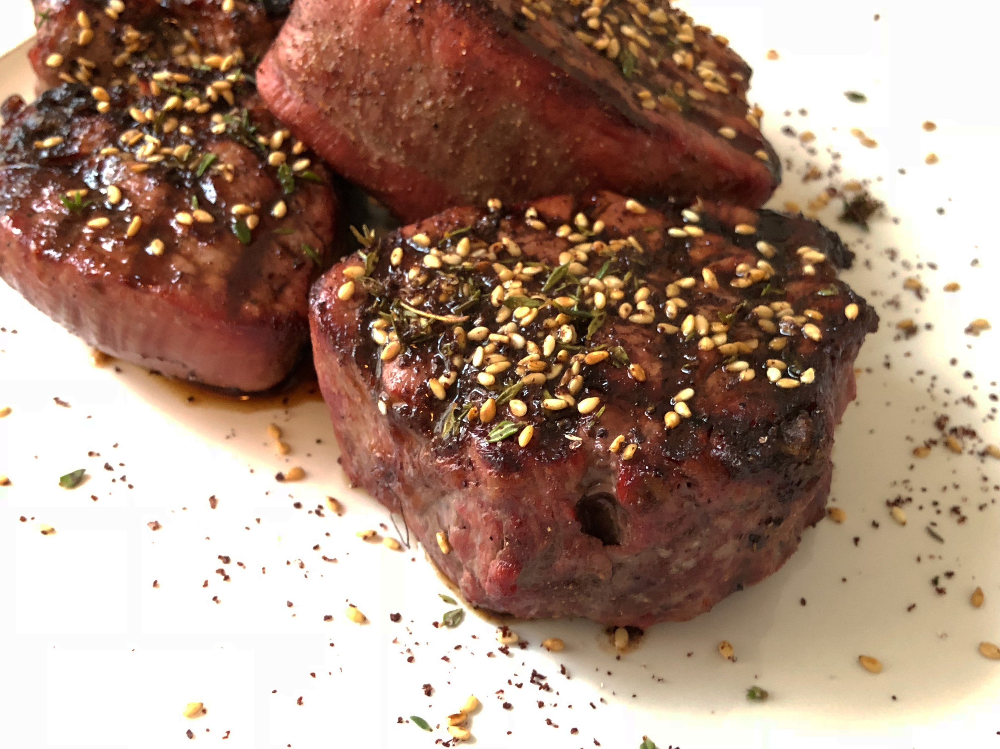

Steak

Description
There's nothing better than a good steak.
A steak, also sometimes called "beef steak", is a meat generally sliced across the muscle fibers, potentially including a bone. It is normally grilled, though it can also be pan-fried. Steak can also be cooked in sauce, such as in steak and kidney pie, or minced and formed into patties, such as hamburgers.
Ingredients
- 1 (2-inch) New-York strip loin
- Salt and pepper
- 2 tablespoons canola oil
Steps
- Preheat the oven to 350 degrees F.
- Sprinkle the steak with salt and pepper on each side. In a blazing hot cast-iron pan on medium-high, heat the oil. Sear the steak for 3 minutes on each side. Remove the steak from the stovetop and put it in the oven for 5 minutes.
- Enjoy!